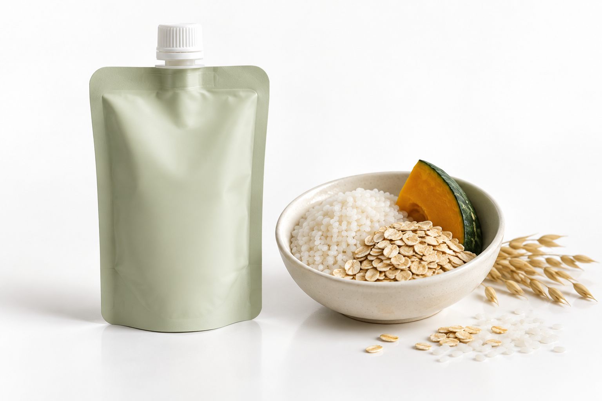
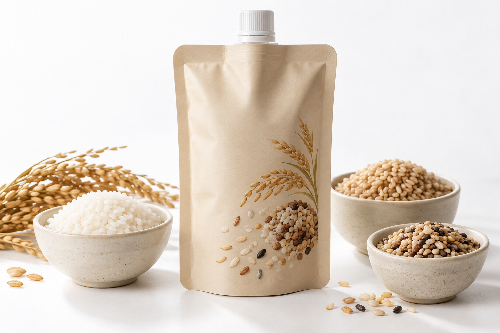
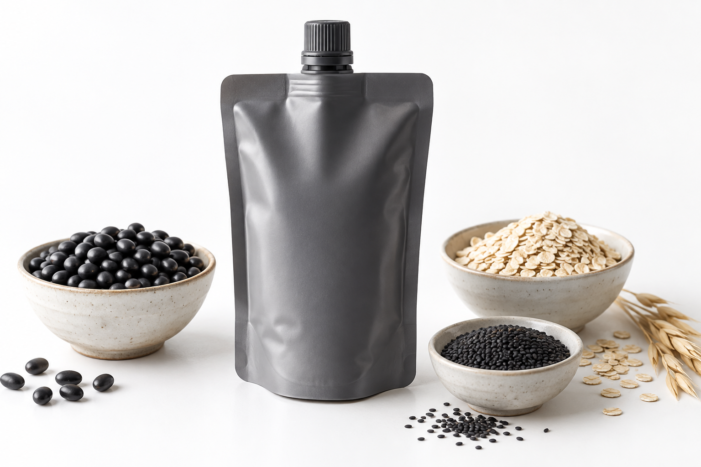

단호박
즉석죽 대표 신호에서 반복 확인되는 친숙한 단맛 계열.
햇반 단호박죽 · 공개 리뷰 23,462
집·회사·가방 어디서든 꺼내 바로 먹는 기본 죽 3종에, 셀핀다 영양 레시피를 제품별로 더합니다.
공개 리뷰·구매 신호와 짱죽 제품군을 교차 확인해, 첫 제품의 기본 맛과 제조 방향을 정했습니다.
즉석죽 대표 신호에서 반복 확인되는 친숙한 단맛 계열.
파우치 죽에서 높은 리뷰 신호를 보이는 식사형 기본축.
짱죽 공개 제품군에서 확인되는 200g 죽 제조 친화 조합.
제품 차별화는 낯선 원료를 앞세우는 것이 아니라, 소비자가 한 번에 이해하는 죽 위에 만들어집니다.
세 가지 모두 쌀 기반의 익숙한 죽으로 시작합니다. 언제든 꺼내 먹기 쉬운 제형 위에 셀핀다 영양 레시피와 물성·풍미를 설계합니다.
부드럽고 은은한 단맛의 기본 죽

매일 먹기 좋은 담백한 식사형 기본 죽

고소하고 깊은 풍미의 든든한 식사형 죽

셀핀다의 역할은 죽을 복잡하게 만드는 것이 아니라, 제품별 섭취 상황과 맛을 해치지 않는 영양 조합을 설계하는 것입니다.
대중성이 확인된 원료와 제조사가 다루기 쉬운 식품 베이스
제품별 목적에 따라 조합하되, 원료 적합성·함량·맛·열처리 안정성을 검증
집·회사·가방에서 별도 조리나 도구 없이 바로 먹는 흐름을 유지
부드러운 단맛을 유지하면서 ‘가볍게 시작하는 아침’ 이야기를 만듭니다. 단백질 원료의 이취와 단맛 균형을 우선 검증합니다.
가장 반복섭취 가능성이 높은 담백한 베이스에 균형 영양 이야기를 연결합니다. Morning 7의 기준 제품 후보입니다.
깊은 풍미와 든든한 식사감을 살리되, 원료 향과 열처리 안정성의 제조 검증을 선행합니다.
※ 위 조합은 제품 설계 후보입니다. 원료의 식품 사용 가능 여부, 사용조건, 표시·광고 가능 범위, 안전성, 열처리 안정성 및 완제품 함량 확인 후 확정합니다.
공개 데이터는 실제 판매량 전체가 아니라 플랫폼에서 확인 가능한 리뷰·월간 구매 신호입니다. 따라서 시장 방향성과 우선순위를 정하는 근거로 사용합니다.
브랜드사는 기본 죽 3종과 영양 레시피 방향을 제시하고, 제조사는 실제 배합과 공정으로 구현 가능한지 확인합니다.
프로틴·GABA·아르기닌·오르니틴·셀레늄·아연의 식품 원료 적합성과 사용조건 확인
레토르트·살균 이후 영양 성분, 이취, 색, 점도와 분리 변화 확인
200g 충진·실링·누액·통과성·소비기한을 실제 샘플로 검토
원료·가공·살균·포장·수율을 포함한 제조원가와 최소 생산수량 확인
제품명을 가린 상태에서도 부드러움·매일성·든든함이 구분되는지 평가
CELLPINDA MORNING 7은 시장에서 이해되는 기본 죽 3종부터 제조시험을 시작합니다.